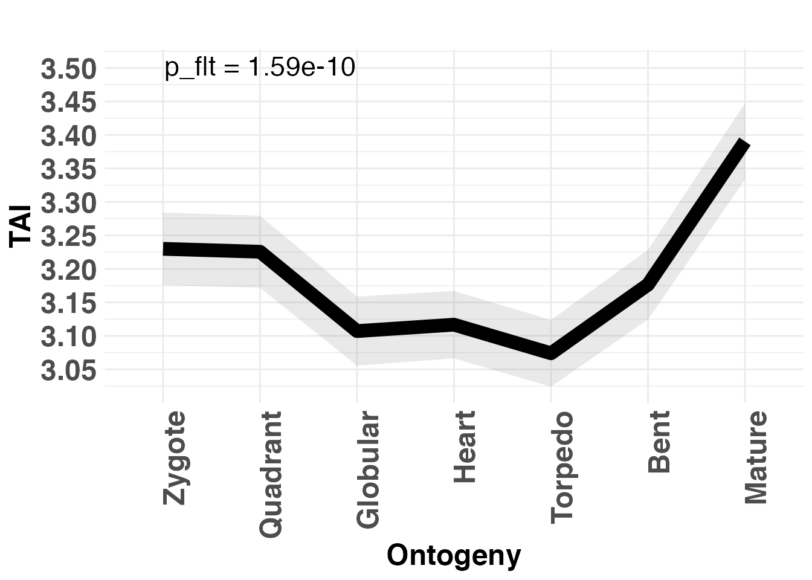
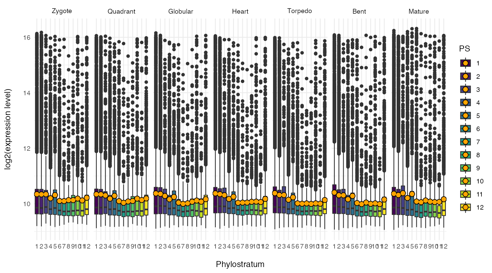
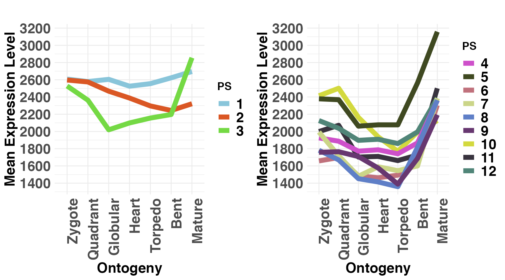
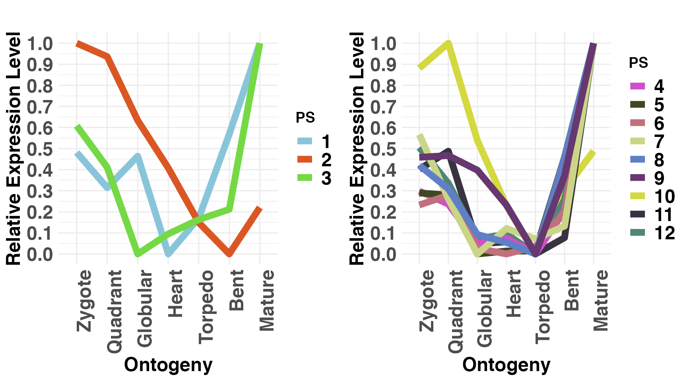

Evolutionary Transcriptomics with R
Motivation
In the past years, a variety of studies aimed to uncover the molecular basis of morphological innovation and variation from the evolutionary developmental perspective. These studies often rely on transcriptomic data to establish the molecular patterns driving the complex biological processes underlying phenotypic plasticity.
Although transcriptome information is a useful start to study the molecular mechanisms underlying a biological process of interest (molecular phenotype), they rarely capture how these expression patterns emerged in the first place or to what extent they are possibly constrained, thereby neglecting the evolutionary history and developmental constraints of genes contributing to the overall pool of expressed transcripts.
To overcome this limitation, the myTAI package introduces procedures summarized under the term evolutionary transcriptomics to integrate gene age information into classical gene expression analysis. Gene age inference can be performed with various existing software, but we recommend using GenEra or orthomap, since they address published shortcomings of gene age inference (see detailed discussion here). In addition, users can easily retrieve previously precomputed gene age information via our data package phylomapr.
Evolutionary transcriptomics studies can serve as a first approach to screen in silico for the potential existence of evolutionary and developmental constraints within a biological process of interest. This is achieved by quantifying transcriptome conservation patterns and their underlying gene sets in biological processes. The exploratory analysis functions implemented in myTAI provide users with a standardized, automated and statistically sound framework to detect and analyze patterns of evolutionary constraints in any transcriptome dataset of interest.
Detailed documentation provided here
Citation
Please cite the following paper when using myTAI for your own research. This will allow me to continue working on this software tool and will motivate me to extend its functionality and usability in the next years. Many thanks in advance!
Drost et al. myTAI: evolutionary transcriptomics with R. Bioinformatics 2018, 34 (9), 1589-1590. doi:10.1093
Dependencies
myTAI is using OpenMP to run cpp code in parallel, thus you might need to install additional software.
Mac:
brew install llvm libomp
cd /usr/local/lib
ln -s /usr/local/opt/libomp/lib/libomp.dylib ./libomp.dylibLinux: 1. Check if you have an OpenMP-enabled compiler: Open a terminal and run the command gcc --version or g++ --version to check if you have the GNU Compiler Collection (GCC) installed. OpenMP support is typically included in GCC.
If you don't have GCC installed, you can install it using your distribution's package manager. For example, on Ubuntu, you can use sudo apt-get install build-essential to install GCC.-
Install the libomp library: Open a terminal and run the command appropriate for your package manager:
On Ubuntu or Debian-based systems:
sudo apt-get install libomp-devorsudo apt install libomp-devOn Fedora or CentOS systems:
sudo dnf install libomp-develOn Arch Linux:
sudo pacman -S libomp
Windows:
On Windows, the most common OpenMP implementation is provided by Microsoft Visual C++ (MSVC) compiler, which includes OpenMP support by default. So, if you are using MSVC as your C++ compiler, you should have OpenMP support without any additional installations.
Installation
Users can install myTAI from CRAN:
# install myTAI 0.9.3
install.packages("myTAI", dependencies = TRUE)Short package description
Using myTAI, any existing or newly generated transcriptome dataset can be combined with evolutionary information (find details here) to retrieve novel insights about the evolutionary conservation of the transcriptome at hand.
For the purpose of performing large scale evolutionary transcriptomics studies, the myTAI package implements the quantification, statistical assessment, and analytics functionality to allow researchers to study the evolution of biological processes by determining stages or periods of evolutionary conservation or variability in transcriptome data.
We hope that myTAI will become the community standard tool to perform evolutionary transcriptomics studies and we are happy to add required functionality upon request.
Scientific background
Today, phenomena such as morphological mutations, diseases or developmental processes are primarily investigated on the molecular level using transcriptomics approaches. Transcriptomes denote the total number of quantifiable transcripts present at a specific stage in a biological process. In disease or developmental (defect) studies, transcriptomes are usually measured over several time points. In treatment studies aiming to quantify differences in the transcriptome due to biotic stimuli, abiotic stimuli, or diseases usually treatment / disease versus non-treatment / non-disease transcriptomes are compared. In either case, comparing changes in transcriptomes over time or between treatments allows us to identify genes and gene regulatory mechanisms that might be involved in governing the biological process of investigation. Although classic transcriptomics studies are based on an established methodology, little is known about the evolution and conservation mechanisms underlying such transcriptomes. Understanding the evolutionary mechanism that change transcriptomes over time, however, might give us a new perspective on how diseases emerge in the first place or how morphological changes are triggered by changes of developmental transcriptomes.
Evolutionary transcriptomics aims to capture and quantify the evolutionary conservation of genes that contribute to the transcriptome during a specific stage of the biological process of interest. The resulting temporal conservation pattern then enables to detect stages of development or other biological processes that are evolutionarily conserved (Drost et al., 2018). This quantification on the highest level is achieved through transcriptome indices (e.g. Transcriptome Age Index or Transcriptome Divergence Index) which aim to quantify the average evolutionary age Barrera-Redondo et al., 2022 or sequence conservation Drost et al., 2015 of genes that contribute to the transcriptome at a particular stage. In general, evolutionary transcriptomics can be used as a method to quantify the evolutionary conservation of transcriptomes at particular developmental stages and to investigate how transcriptomes underlying biological processes are constrained or channeled due to events in evolutionary history (Dollo’s law) (Drost et al., 2017).
Please note, since myTAI relies on gene age inference and there has been an extensive debate about the best approaches for gene age inference in the last years, please follow my updated discussion about the gene age inference literature. With GenEra, we addressed all previously raised issues and we encourage users to run GenEra when aiming to infer gene ages for further myTAI analyses.
Install Developer Version
Some bug fixes or new functionality will not be available on CRAN yet, but in the developer version here on GitHub. To download and install the most recent version of myTAI run:
# install developer version of myTAI
devtools::install_github("drostlab/myTAI")NEWS
The current status of the package as well as a detailed history of the functionality of each version of myTAI can be found in the NEWS section.
Tutorials
The following tutorials will provide use cases and detailed explanations of how to quantify transcriptome conservation with myTAI and how to interpret the results generated with this software tool.
Example
Quantify transcriptome conservation using TAI
# visualize global Transcriptome Age Index pattern
PlotSignature(ExprExample)
Quantify expression level distributions for each gene age category
# plot expression level distributions for each age (=PS) category
# and each developmental stage
PlotCategoryExpr(ExprExample, "PS")
Quantify mean expression of individual gene age categories
# plot mean expression of each age category seperated by old (PS1-3)
# versus young (PS4-12) genes
PlotMeans(ExprExample, Groups = list(1:3, 4:12))
Quantify relative mean expression of each age category seperated by old versus young genes
# plot relative mean expression of each age category seperated by old (PS1-3)
# versus young (PS4-12) genes
PlotRE(ExprExample, Groups = list(1:3, 4:12))
# plot the significant differences between gene expression distributions
# of old (=group1) versus young (=group2) genes
PlotGroupDiffs(ExpressionSet = ExprExample,
Groups = list(group_1 = 1:3, group_2 = 4:12),
legendName = "PS",
plot.type = "boxplot")Getting started with myTAI
Users can also read the tutorials within (RStudio) :
# source the myTAI package
library(myTAI)
# look for all tutorials (vignettes) available in the myTAI package
# this will open your web browser
browseVignettes("myTAI")
# or as single tutorials
# open tutorial: Introduction to Phylotranscriptomics and myTAI
vignette("Introduction", package = "myTAI")
# open tutorial: Intermediate Concepts of Phylotranscriptomics
vignette("Intermediate", package = "myTAI")
# open tutorial: Advanced Concepts of Phylotranscriptomics
vignette("Advanced", package = "myTAI")
# open tutorial: Age Enrichment Analyses
vignette("Enrichment", package = "myTAI")
# open tutorial: Gene Expression Analysis with myTAI
vignette("Expression", package = "myTAI")
# open tutorial: Taxonomic Information Retrieval with myTAI
vignette("Taxonomy", package = "myTAI")
# open tutorial: Discussing Genomic Phylostratigraphy
vignette("Phylostratigraphy", package = "myTAI")In the myTAI framework users can find:
Phylotranscriptomics Measures:
-
TAI(): Function to compute the Transcriptome Age Index (TAI) -
TDI(): Function to compute the Transcriptome Divergence Index (TDI) -
TPI(): Function to compute the Transcriptome Polymorphism Index (TPI) -
REMatrix(): Function to compute the relative expression profiles of all phylostrata or divergence-strata -
RE(): Function to transform mean expression levels to relative expression levels -
pTAI(): Compute the Phylostratum Contribution to the global TAI -
pTDI(): Compute the Divergence Stratum Contribution to the global TDI -
pMatrix(): Compute Partial TAI or TDI Values -
pStrata(): Compute Partial Strata Values
Visualization and Analytics Tools:
-
PlotSignature(): Main visualization function to plot evolutionary signatures across transcriptomes -
PlotPattern(): Base graphics function to plot evolutionary signatures across transcriptomes -
PlotContribution(): Plot Cumulative Transcriptome Index -
PlotCorrelation(): Function to plot the correlation between phylostratum values and divergence-stratum values -
PlotRE(): Function to plot the relative expression profiles -
PlotBarRE(): Function to plot the mean relative expression levels of phylostratum or divergence-stratum classes as barplot -
PlotMeans(): Function to plot the mean expression profiles of age categories -
PlotMedians(): Function to plot the median expression profiles of age categories -
PlotVars(): Function to plot the expression variance profiles of age categories -
PlotDistribution(): Function to plot the frequency distribution of genes within the corresponding age categories -
PlotCategoryExpr(): Plot the Expression Levels of each Age or Divergence Category as Barplot or Violinplot -
PlotEnrichment(): Plot the Phylostratum or Divergence Stratum Enrichment of a given Gene Set -
PlotGeneSet(): Plot the Expression Profiles of a Gene Set -
PlotGroupDiffs(): Plot the significant differences between gene expression distributions of PS or DS groups -
PlotSelectedAgeDistr(): Plot the PS or DS distribution of a selected set of genes
A Statistical Framework and Test Statistics:
-
FlatLineTest(): Function to perform the Flat Line Test that quantifies the statistical significance of an observed phylotranscriptomics pattern (significant deviation from a frat line = evolutionary signal) -
ReductiveHourglassTest(): Function to perform the Reductive Hourglass Test that statistically evaluates the existence of a phylotranscriptomic hourglass pattern (hourglass model) -
EarlyConservationTest(): Function to perform the Reductive Early Conservation Test that statistically evaluates the existence of a monotonically increasing phylotranscriptomic pattern (early conservation model) -
LateConservationTest(): Function to perform the Reductive Late Conservation Test that statistically evaluates the existence of a monotonically decreasing phylotranscriptomic pattern (early divergence model) -
ReverseHourglassTest: Function to perform the Reverse Hourglass Test that statistically evaluates the existence of a reverse hourglass pattern (low-high-low) -
EnrichmentTest(): Phylostratum or Divergence Stratum Enrichment of a given Gene Set based on Fisher’s Test -
bootMatrix(): Compute a Permutation Matrix for Test Statistics
All functions also include visual analytics tools to quantify the goodness of test statistics.
Differential Gene Expression Analysis
-
DiffGenes(): Implements Popular Methods for Differential Gene Expression Analysis -
CollapseReplicates(): Combine Replicates in an ExpressionSet -
CombinatorialSignificance(): Compute the Statistical Significance of Each Replicate Combination -
Expressed(): Filter Expression Levels in Gene Expression Matrices (define expressed genes) -
SelectGeneSet(): Select a Subset of Genes in an ExpressionSet -
PlotReplicateQuality(): Plot the Quality of Biological Replicates -
GroupDiffs(): Quantify the significant differences between gene expression distributions of PS or DS groups
Taxonomic Information Retrieval
-
taxonomy(): Retrieve Taxonomic Information for any Organism of Interest
Minor Functions for Better Usibility and Additional Analyses
-
MatchMap(): Match a Phylostratigraphic Map or Divergence Map with a ExpressionMatrix -
tf(): Transform Gene Expression Levels -
tfStability(): Perform Permutation Tests Under Different Transformations -
age.apply(): Age Category Specific apply Function -
ecScore(): Compute the Hourglass Score for the EarlyConservationTest -
lcScore(): Compute the Hourglass Score for the LateConservationTest -
geom.mean(): Geometric Mean -
harm.mean(): Harmonic Mean -
omitMatrix(): Compute TAI or TDI Profiles Omitting a Given Gene -
rhScore(): Compute the Hourglass Score for the Reductive Hourglass Test -
reversehourglassScore(): Compute the Reverse Hourglass Score for the Reverse Hourglass Test
Studies that successfully used myTAI to quantify transcriptome conservation:
Evolutionary transcriptomics of metazoan biphasic life cycle supports a single intercalation origin of metazoan larvae J Wang, L Zhang, S Lian, Z Qin, X Zhu, X Dai, Z Huang et al. - Nature Ecology & Evolution, 2020
Pervasive convergent evolution and extreme phenotypes define chaperone requirements of protein homeostasis Y Draceni, S Pechmann - Proceedings of the National Academy of Sciences, 2019
Reconstructing the transcriptional ontogeny of maize and sorghum supports an inverse hourglass model of inflorescence development S Leiboff, S Hake - Current Biology, 2019
A unicellular relative of animals generates a layer of polarized cells by actomyosin-dependent cellularization O Dudin, A Ondracka, X Grau-Bové, AAB Haraldsen et al. - eLife, 2019
Evidence for active maintenance of phylotranscriptomic hourglass patterns in animal and plant embryogenesis HG Drost, A Gabel, I Grosse, M Quint - Molecular biology and evolution, 2015
Gene Expression Does Not Support the Developmental Hourglass Model in Three Animals with Spiralian Development L Wu, KE Ferger, JD Lambert - Molecular biology and evolution, 2019
Transcriptome age of individual cell types in Caenorhabditis elegans F Ma, C Zheng - Proceedings of the National Academy of Sciences, 2023
The Transcriptional Landscape of Polyploid Wheats and their Diploid Ancestors during Embryogenesis and Grain Development D Xiang, TD Quilichini, Z Liu, P Gao, Y Pan et al. - The Plant Cell, 2019
Embryo-Like Features in Developing Bacillus subtilis Biofilms M Futo, L Opašić, S Koska, N Čorak, T Široki, V Ravikumar, A Thorsell, M Lenuzzi, D Kifer, M Domazet-Lošo, K Vlahoviček, I Mijakovic, T Domazet-Lošo - Molecular Biology and Evolution, 2021
New Genes Interacted With Recent Whole-Genome Duplicates in the Fast Stem Growth of Bamboos G Jin, P-F Ma, X Wu, L Gu, M Long, C Zhang, DZ Li - Molecular Biology and Evolution, 2021
Developmental constraints on genome evolution in four bilaterian model species J Liu, M Robinson-Rechavi - Genome biology and evolution, 2018
Mapping selection within Drosophila melanogaster embryo’s anatomy I Salvador-Martínez et al. - Molecular biology and evolution, 2017
Distribution and diversity of enzymes for polysaccharide degradation in fungi R Berlemont - Scientific reports, 2017
The origins and evolutionary history of human non-coding RNA regulatory networks M Sherafatian, SJ Mowla - Journal of bioinformatics and computational biology, 2017
Elucidating the endogenous synovial fluid proteome and peptidome of inflammatory arthritis using label-free mass spectrometry SM Mahendran, EC Keystone, RJ Krawetz et al. - Clinical proteomics, 2019
Phylostratr: a framework for phylostratigraphy Z Arendsee, J Li, U Singh, A Seetharam et al. - Bioinformatics, 2019
Pervasive convergent evolution and extreme phenotypes define chaperone requirements of protein homeostasis Y Draceni, S Pechmann - BioRxiv, 2019
Environmental DNA reveals landscape mosaic of wetland plant communities ME Shackleton, GN Rees, G Watson et al. - Global Ecology and Conservation, 2019
Algorithms for synteny-based phylostratigraphy and gene origin classification Z Arendsee - 2019
High expression of new genes in trochophore enlightening the ontogeny and evolution of trochozoans F Xu, T Domazet-Lošo, D Fan, TL Dunwell, L Li et al. - Scientific reports, 2016
Oxytocin receptor expression patterns in the human brain across development J Rokicki, T Kaufmann, A-MG de Lange, D van der Meer, S Bahrami, AM Sartorius, UK Haukvik, NE Steen, E Schwarz, DJ Stein, T Nærland, OA Andreassen, LT Westlye, DS Quintana - Neuropsychopharmacol, 2022
The Phylotranscriptomic Hourglass Pattern in Fungi: An Updated Model Y Xie, HS Kwan, PL Chan, WJ Wu, J Chiou, J Chang BioRxiv, 2022
An ancient split of germline and somatic stem cell lineages in Hydra C Nishimiya-Fujisawa, H Petersen, TC-T Koubková-Yu, C Noda, S Shigenobu, J Bageritz, T Fujisawa, O Simakov, S Kobayashi, TW Holstein - BioRxiv, 2023
Discussions and Bug Reports
I would be very happy to learn more about potential improvements of the concepts and functions provided in this package.
Furthermore, in case you find some bugs or need additional (more flexible) functionality of parts of this package, please let me know:
References
Domazet-Lošo T. and Tautz D. A phylogenetically based transcriptome age index mirrors ontogenetic divergence patterns. Nature (2010) 468: 815-8.
Quint M, Drost HG, et al. A transcriptomic hourglass in plant embryogenesis. Nature (2012) 490: 98-101.
Drost HG, Gabel A, Grosse I, Quint M. Evidence for Active Maintenance of Phylotranscriptomic Hourglass Patterns in Animal and Plant Embryogenesis. Mol. Biol. Evol. (2015) 32 (5): 1221-1231.
Drost HG, Bellstädt J, Ó’Maoiléidigh DS, Silva AT, Gabel A, Weinholdt C, Ryan PT, Dekkers BJW, Bentsink L, Hilhorst H, Ligterink W, Wellmer F, Grosse I, and Quint M. Post-embryonic hourglass patterns mark ontogenetic transitions in plant development. Mol. Biol. Evol. (2016) doi:10.1093/molbev/msw039
Acknowledgement
I would like to thank several individuals for making this project possible.
First I would like to thank Ivo Grosse and Marcel Quint for providing me a place and the environment to be able to work on fascinating topics of Evo-Devo research and for the fruitful discussions that led to projects like this one.
Furthermore, I would like to thank Alexander Gabel and Jan Grau for valuable discussions on how to improve some methodological concepts of some analyses present in this package.
I would also like to thank my past Master Students: Sarah Scharfenberg, Anne Hoffmann, and Sebastian Wussow who worked intensively with this package and helped me to improve the usability and logic of the package environment.